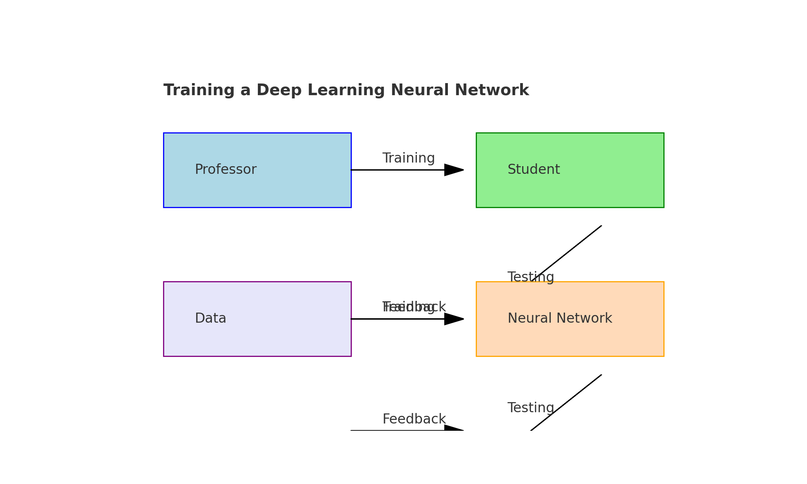
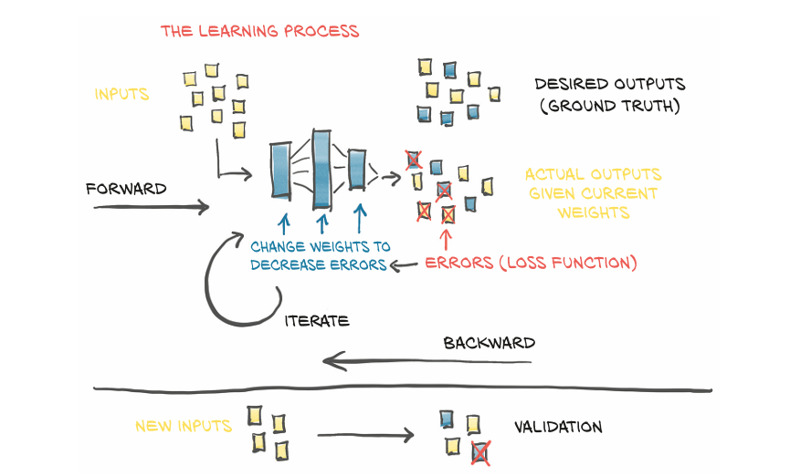
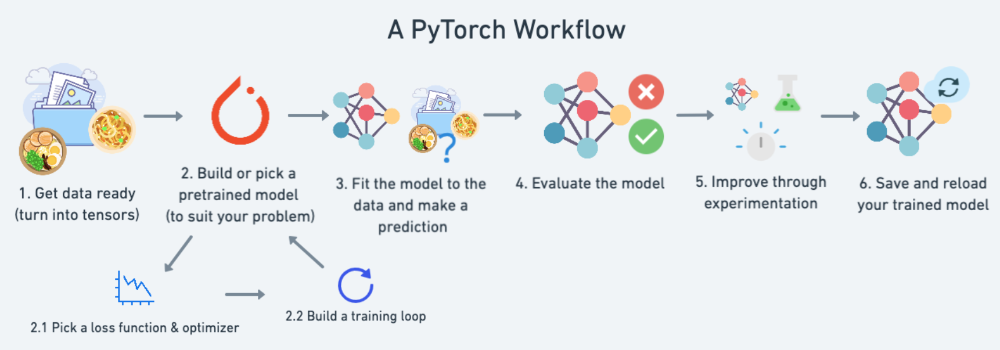

01. PyTorch Workflow Fundamentals
Training a deep learning neural network is similar to a professor training a student for an exam. Initially, the professor gathers the syllabus and splits it into a training part and a test part. The student is trained on the training material and is then subjected to the test. Based on the test results, the professor calculates the score and suggests that the student minimize their errors. Similarly, in deep learning, a model is trained on a dataset and then evaluated on a test set, with adjustments made to minimize the loss function.
The crux of machine and deep learning is to take data, build an algorithm(neural network) to discover deep patterns in it and use the discovered patterns to generate new data.
There are many ways to design this process. We start from the very basic; which is predicting a straight line. We will see if we can build a PyTorch model that learns the patterns of straight line and matches it.

All of the materials for this course are available on GitHub
If you got into any trouble, you can ask questions on the Discussion page there too.
Here we go...
import torch
from torch import nn # nn contains all of PyTorch's building blocks for neural networks
import matplotlib.pyplot as plt
# Check PyTorch version
torch.__version__